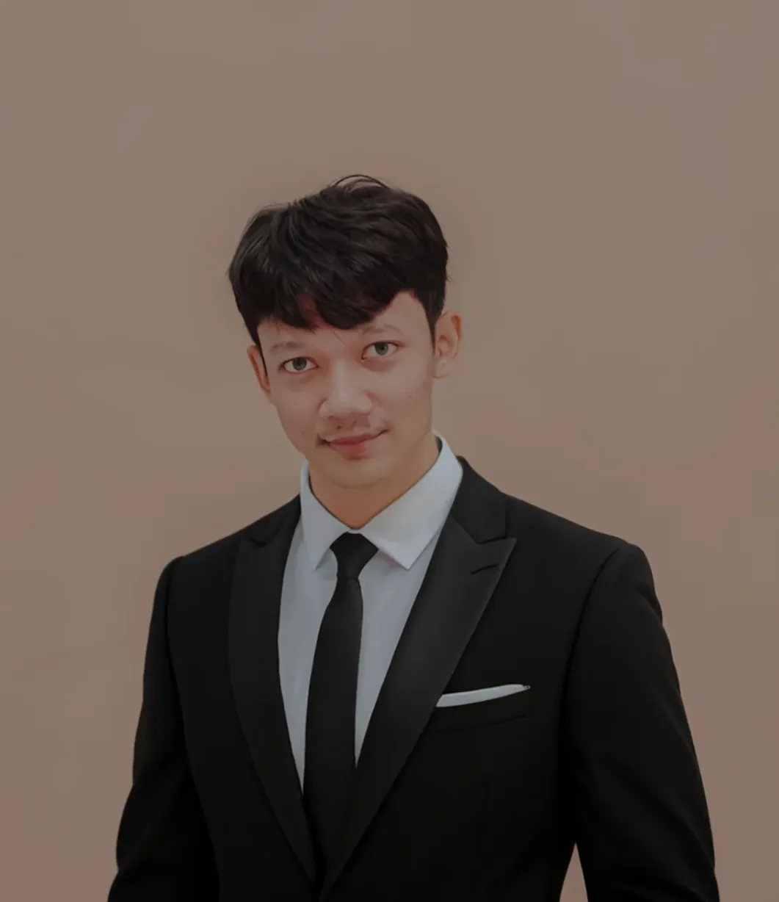

Adi Prayogo — pembangun hal-hal yang dipakai, bukan sekadar demo.

Halo, saya Adi. Saya suka membangun hal-hal yang benar-benar dipakai — bukan sekadar demo. Fokus saya: aplikasi web dan automation yang menyelesaikan pekerjaan berulang secara diam-diam di latar belakang.
Sebagian besar karya saya berputar di sekitar pesan dan otomasi: chatbot multi-platform, bot WhatsApp untuk transaksi PPOB, sampai tools pengelolaan live stream. Selain itu saya juga membangun aplikasi bisnis bertumpuk Laravel + Livewire — termasuk sistem POS (point of sale) berbasis peran.
Prinsip kerja saya sederhana: kode seminimal mungkin, yang penting jalan dan awet. Suka ngoprek homelab, self-hosting, dan menyelipkan AI ke alur kerja sehari-hari.